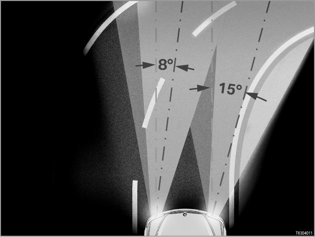

Part 1
63 02 03 007 Adaptive Headlight

NOTE: Option 524 only in conjunction with optional equipment 522.
Optional equipment 524 "Adaptive headlights" is only available in conjunction with optional equipment 522 Xenon dipped and main-beam headlights.
NOTE: EU approval for optional equipment 522 only in conjunction with optional equipment 502.
Optional equipment 522 "Xenon dipped and main-beam headlights" is only available together with optional equipment 502 Headlight cleaning system (in countries subject to EU approval).
NOTE: ALC --> AHL
The development code for the adaptive headlights was "ALC". ALC stood for "Adaptive Light Control". The marketing and sales designation for optional equipment 524 in English-language markets is "adaptive headlights", abbreviated to "AHL". Diagnosis and technical vehicle documentation therefore use the abbreviation "AHL". However, "ALC" is still used on some control units and in the EPC (Electronic Parts Catalogue).
Introduction
The Adaptive Headlight system turns the bi-xenon headlights towards the inside of a bend when cornering. This improves illumination of the curve of the road. Visibility is therefore improved. When cornering, the occupant is not looking into a "black hole" - instead, the adaptive headlights allow the driver to see the curve of the road.
This BMW Service Technology bulletin (SBT) describes the adaptive headlights for the following model series:
> E60, E61, E63, E64 up to 03/2005
[System overview ...]
The system overview applies accordingly for the E65 and E66 up to 03/2005.
> E60, E61, E63, E64 from 03/2005 until 09/2005
[System overview ...]
The system overview applies accordingly for the E65 and E66 from 03/2005.
NOTE: AHL control unit discontinued from 03/2005.
From 03/2005, the AHL control unit software is integrated into the light module on the E60, E61, E63, E64, E65 and E66. The AHL control unit is no longer fitted.
> E60, E61, E63, E64 from 09/2005
[System overview ...]
The vehicle electrical system was changed from 09/2005. As a result of the changeover, several control units were discontinued and some control unit functions were integrated into new control units.
> E70, E71, E72
[System overview ...]
The turning lights function is new on the E70 from the series launch.
The turning lights give the area next to the roadway additional illumination when you are turning or cornering (driving in tight bends). They are also active when you park the vehicle.Depending on the country concerned, the turning lights are switched on when cornering.
> E81, E82, E87, E88, E89, E90, E91, E92, E93
E81, E82, E87, E88, E89, E90, E91, E92, E93
For the E81, E82, E88, E89, E92, E93 from series launch and for the E87 from 03/2007, the turning light function is new.
NOTE: Cornering light in conjunction with optional extra 524
Turning lights are a subfunction of optional equipment 524 "Adaptive headlights". Bi-xenon headlights are standard equipment on the E92, E93. Optional equipment 524 is standard on the US version.
NOTE: AHL components on E46, E53 and E83
There is a separate system description for the adaptive headlights on the E46, E53, E83. [more in the vehicle engineering diagnosis (FTD) 63 03 03 047]
NOTE: AHL components on the E63, E64
- The E63, E64 has a zero-position sensor.
[more in the vehicle engineering diagnosis (FTD) 63 03 03 047]
- Otherwise, the E63 and E64 are the same as the other 5-Series models.
NOTE: AHL components on the E70, E71, E72, E81, E82, E87, E88, E89, E90, E91, E92, E93
The adaptive headlights largely correspond to the adaptive headlights of the E60, E61, E63, E64 and E65, E66:
- The E70, E71, E72, E81, E82,E87, E88, E89, E90, E91, E92, E93 has a zero-position sensor.
- The E70, E71, E72, E81, E82, E87, E88, E89, E90, E91, E92, E93 uses the FRM (footwell module) as a control unit for the exterior lights. The footwell module contains the functions of the light module, AHL control unit and the basic module (or body general module).
[more in the vehicle engineering diagnosis (FTD) 61 04 04 094]
Brief component description
The following components and control units provide signals for the adaptive headlight system:
- CAS: Car Access System
The Car Access System supplies signals for the terminal control (e.g. terminal 15 ON). The adaptive headlights control unit is activated when terminal 15 is switched ON.
- Light switch
The rotary switch for the side lights and low-beam headlights differs depending on the vehicle equipment level (adaptive headlights, automatic driving lights control, automatic or manual headlight beam throw adjustment). For the adaptive headlights function to operate, the light switch position must be set to "A" ("A" = "automatic driving lights control" and "adaptive headlights"). [more ...]
- Turn signal/high beam switch
The high beam headlights are switched on and off by the turn signal/high beam switch (by pressing or pulling the switch). The adaptive headlights function operates with both dipped and high beam headlights. [more ...]
- SZL: Steering Column Switch Cluster
The SZL control unit forwards the signals from the turn signal/high beam switch to the adaptive headlights control unit.
> E60, E61, E63, E64, E65 and E66
[more ...]
> E70, E71, E72, E81,E82, E87,E88, E89, E90, E91, E92, E93
The steering column switch cluster forwards the signals from the turn signal/high beam switch to the footwell module (FRM). [more in the vehicle engineering diagnosis (FTD) 61 07 04 103]
- Ride height sensors
If the optional equipment Adaptive headlights is fitted, the adaptive headlights control unit evaluates the signals from the ride height sensors. Reason: the adaptive headlights control unit also controls the automatic headlight beam throw adjustment.
The automatic headlight beam throw adjustment feature adjusts the height of the headlights to compensate for variations in the vehicle inclination angle (e.g. when the vehicle is laden, and under braking and acceleration in dynamic driving situations).
[more ...]
- Brake light switch
If the optional equipment Adaptive headlights is fitted, the signals from the brake light switch are read by the adaptive headlights control unit. In addition, the brake light switch signal is also a signal for automatic headlight beam throw adjustment, see above: Ride height sensors.
- Position sensor
> E60, E61> E65, E66
Hella headlights have a position sensor.
The position sensor in the swivel module for the bi-xenon headlights supplies a signal for the horizontal movement of the headlights.
[more ...]
- Zero-position sensor
> E63, E64
> E70, E71, E81, E82, E87, E88, E89, E90, E91, E92, E93
Automotive Lighting headlights, previously Bosch, have a zero-position sensor.
The zero-position sensor registers the horizontal movement of the headlight.
[more ...]
- EGS control unit or reversing light switch
When reverse gear is engaged, the headlights are moved to the straight-ahead position.
- On vehicles with automatic transmission, the EGS control unit provides the "Reverse gear engaged" signal. (EGS: electronic transmission control).
- On vehicles with manual gearboxes, the signal is supplied by the reversing light switch.
- Rain/light sensor for automatic driving lights control
The rain/light sensor measures the ambient brightness outside the vehicle.
- In twilight conditions, the rain/light sensor transmits the message "Twilight" so that the automatic headlight beam throw adjustment can activate low-beam headlights. The headlights are tilted up and down as required, but they are not yet moved towards the bend in the road.
- In darkness, the rain/light sensor transmits the message "Darkness". The adaptive headlights are then activated when the vehicle is cornering. The headlights are moved to the left or right:
[more ...]
- Steering angle sensor and DSC sensor
The steering angle sensor and DSC sensor (DSC = Dynamic Stability Control) supply signals for the adaptive headlights to the adaptive headlights control unit. These signals are evaluated as follows, depending on the vehicle's speed:
- Vehicle speeds up to 30 km/h :The adaptive headlights function is controlled using the information from the steering angle sensor (in the steering column switch cluster).
- Vehicle speeds between 30 km/h and 50 km/h : In the 30 to 50 km/h speed range, there is a continuous transition in signal evaluation: from the evaluation of signals sent by the steering angle sensor to evaluation of the signals sent by the rotation-rate sensor (in the DSC sensor).
- In extreme dynamic driving situations , e.g. if the vehicle starts to skid or fishtail, even at driving speeds of less than 50 km/h , the signals from the rotation-rate sensor are considered. If the vehicle starts to skid or fishtail, the headlights will move to the straight-ahead position. The headlights are not moved until the vehicle has stabilized.
- Vehicle speeds over 50 km/h :At speeds upwards of 50 km/h, the signals from the rotation-rate sensor (in the DSC sensor) form the primary basis for control of the adaptive headlights function.
Reason: For a constant cornering radius, the required steering angle increases disproportionately with speed. In addition, the required steering angle also depends on the coefficient of friction of the roadway. Yaw rate is directly proportional to speed. For this reason, the yaw rate is always the most suitable measure for controlling the adaptive headlights at high speeds.
Even at high speeds, however, the steering angle sensor signal is used to detect (predict) the driver's commands in advance. This prediction is important: The yaw-rate signal is not supplied until the vehicle has responded to the steering wheel movement.
The steering angle sensor signal is disabled so that rapid, momentary steering wheel adjustments (so-called "surging") do not affect the adaptive headlights function.
A number of control units are involved in the adaptive headlights system (see above: CAS, EGS, SZL).Depending on the model series and model revision concerned, the adaptive headlights are actuated by the following control units:
- AHL: Adaptive headlights
> E60, E61, E63, E64, E65, E66 until 03/2005
The AHL control unit actuates the adaptive headlights.
For safety reasons, the AHL control unit is also responsible for the automatic headlight beam throw adjustment. Reason: Oncoming traffic may not be dazzled by the adaptive headlights. If a headlight sticks in an unfavorable position, the AHL control unit will attempt to move this headlight down (using the stepper motors in the automatic headlight beam throw adjustment).
The AHL control unit is connected to the powertrain CAN.
[more ...]
- LM: Light module
> E60, E61, E63, E64, E65, E66 from 03/2005
From 03/2005, the AHL control unit is integrated in the light module.
The light module (LM) controls and monitors all vehicle lights. Information is transmitted and received via the body controller area network data bus. The light module actuates the indicator light for the adaptive headlights (on the light switch).
[more ...]
- FRM: Footwell module
> E70, E71, E72, E81, E82, E87, E88, E90, E91, E92, E93
The footwell module controls the exterior lights and the adaptive headlights.
The footwell module thus takes the place of the light module and the AHL control unit.
The footwell module controls the indicator light for the adaptive headlights (on the light switch).
[more ...]
The footwell module has its own system description.
[more in the vehicle engineering diagnosis (FTD) 61 04 04 094] "footwell module".
The following additional control units are involved in the adaptive headlights:
- SMC: Stepper motor controllers
The stepper motor controllers control the stepper motors in the headlights (for the automatic headlight beam throw adjustment and for the adaptive headlights). The stepper motor controllers are not capable of self-diagnosis. The stepper motor controllers are diagnosed and encoded via the control unit for adaptive headlights.
[more ...]
- SGM: Safety and gateway module
> E60, E61, E63, E64 until 09/2005 and E65, E66
The safety and gateway module (SGM) is the interface between the two data buses body controller area network and powertrain CAN. Thus, all messages exchanged between the light module and the AHL control unit passes through the SGM. Information from the rotation-rate sensor (in the DSC sensor) is also fed through the SGM to the AHL control unit.
- KGM: Body gateway module
> E60, E61, E63, E64 from 09/2005
The vehicle electrical system was changed from 09/2005. As a result of the changeover, several control units were discontinued and some control unit functions were integrated into new control units.
The new body gateway module (KGM) supersedes the safety and gateway module (SGM) previously fitted, the door modules and the micro power module.
[more in the vehicle engineering diagnosis (FTD) 610205143] "Body gateway module"
- Xenon control unit
The xenon control unit actuates the bulb in the bi-xenon headlights.
The xenon control unit is not capable of self-diagnosis. The Xenon control unit is monitored by the light module (E70, E71, E72, E81, E82, E87, E88, E89, E90, E91, E92, E93: footwell module).
[more ...]
The following components are controlled:
- Headlights
Optional equipment 524 Adaptive headlights is only available in conjunction with optional equipment 522 "Xenon light for dipped and main-beam function". This means that bi xenon headlights are employed.
[more ...]
- Stepper motors for the adaptive headlights
The stepper motors turn the swivel modules in the bi xenon headlights. The stepper motors move the headlights vertically and horizontally (vertically = up and down for automatic headlight beam throw adjustment;horizontally = left and right for the adaptive headlights function).
The swivel modules execute the movement.
[more ...]
- Indicator light on the light switch
The indicator light (green LED) next to the "A" (= "automatic driving lights control" and "adaptive headlights") has 2 display functions:
- The indicator light lights up permanently when the automatic driving lights control or adaptive headlights function is switched on (= light switch in position "A").
- The indicator light flashes if a fault develops in the adaptive headlight system.
> E60, E61, E63, E64, E65 and E66:
The indicator light is activated by the light module.
> E70, E71, E72, E81, E82, E87, E88, E89, E90, E91, E92, E93:
The indicator light is activated by the footwell module.
NOTE: From 09/2007, the fault display in the form of the indicator light on the light switch flashing is discontinued.
From 09/2007, the fault display in the form of the indicator light on the light switch flashing is discontinued due to legal stipulations.
From 09/2007 system fault will be indicated by a Check Control message in the instrument panel.